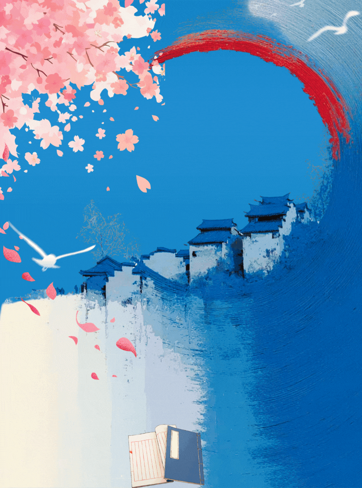
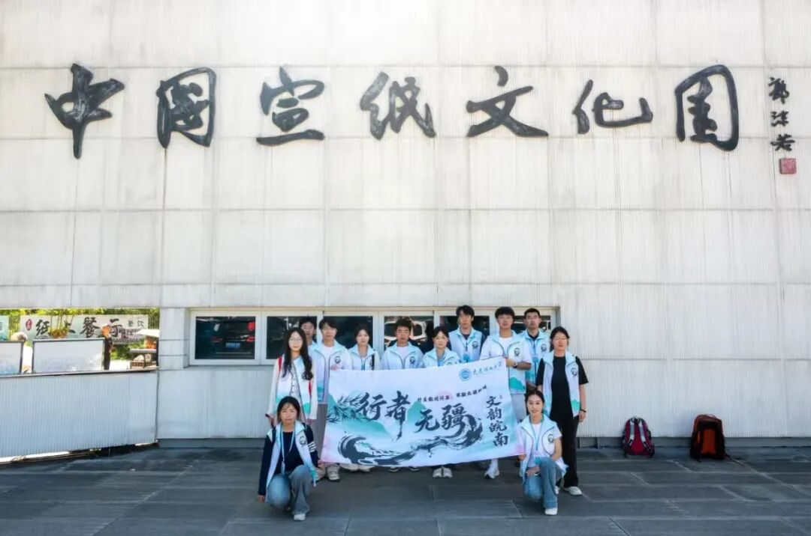
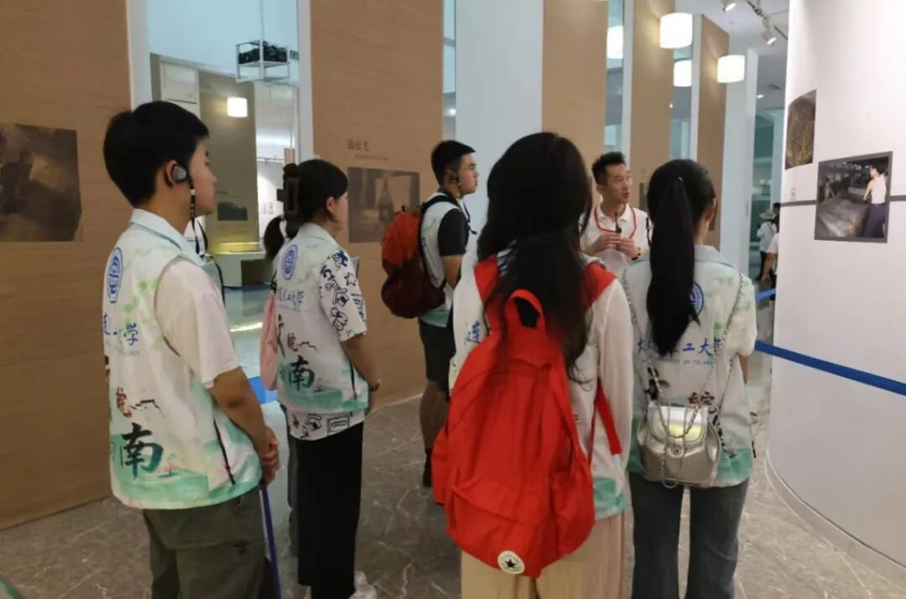
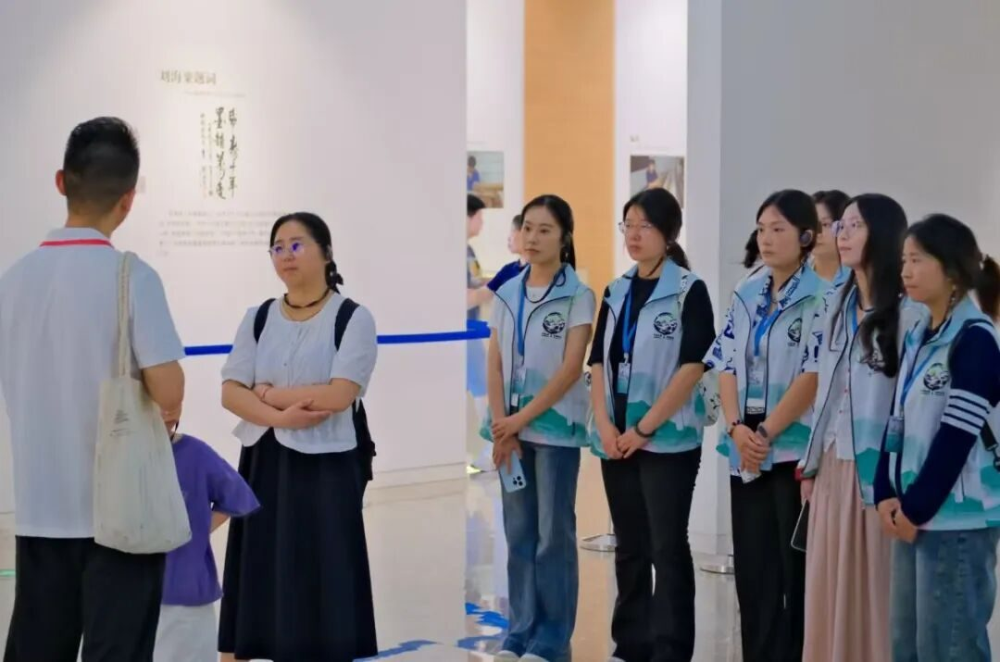
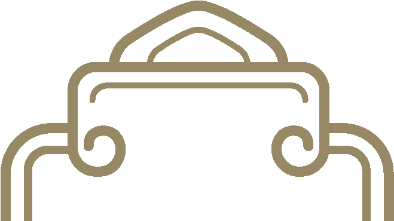

【行者无疆·文韵皖南】素笺藏韵，纤毫落笔续书香


行者无疆
青檀汲山涧清泉
素纸沉淀千载文光
风雨三载淬炼肌理
百道古法，揉进草木绵长
竹杆裁取山间清翠
兽毫细拣寒岭柔霜
七十二道工序细细梳匀
方得一管徽笔，兼具尖齐圆健
百道工序成素纸，专访匠人守纸魂
XING ZHE WU JIANG

继昨日踏访文博古馆与烟火糕坊，今日行者无疆实践团奔赴泾县文房胜地，于宣纸文化园探千年纸韵，赴杨文笔庄悟制笔初心，在纸与笔的方寸天地间，读懂藏于文房四宝里的徽州风骨。
清晨薄雾漫过青檀山林，我们踏入中国宣纸文化园，一头扎进跨越千年的纸作光阴。展厅之内，图文与实物徐徐铺展宣纸渊源：泾县独有的青檀皮、沙田稻草，搭配山间清泉，经日晒雨淋自然漂白，百零八道古法工序，历时三载方能成一张“纸寿千年”的宣纸 。生宣润墨层次万千，熟宣工整宜绘工笔，一纸厚薄之间，藏尽东方书画的审美意境。


行者


穿过陈列展厅，高温蒸腾的晒纸车间映入眼帘，我们有幸专访大国工匠、宣纸非遗传承人毛胜利老师。焙房常年四十余度高温，滚烫钢板烘着湿软薄纸，一刷定纸、力道匀净，轻重分毫皆有讲究，稍失分寸便整纸作废 。三十余载与宣纸相伴，无数个盛夏在蒸笼般的工坊里挥汗，他同我们讲起晒纸工序，道尽手工宣纸无可替代的温度，机械可仿纸形，却复刻不出人手与草木相融的温润气韵。
指尖轻触薄如蝉翼的成品宣纸，洁白柔韧，墨落留痕。我们方才读懂，宣纸从不是单纯书写载体，是山水草木淬炼的非遗瑰宝，是匠人以半生坚守，为中华文脉留存的无字书卷。
七十二道梳毫羽，亲制徽笔悟笔心
XING ZHE WU JIANG
午后行至屯溪杨文笔庄，褪去宣纸的清雅素白，一头坠入徽笔独有的温润风雅。笔庄前店后坊，柜中陈列狼毫、羊毫、兼毫各式徽笔，长短杆、软硬锋各有妙用，自宋代绵延至今的徽笔技艺，曾作宫廷贡品，是历代书画名家案头良伴。

1
2
国家级徽笔非遗传承人杨文老师接待了我们，细细拆解徽笔发展史与毛料甄选门道，狼毫取寒季黄鼠狼尾尖细毛，羊毫甄选山羊毛，一支佳笔需兼具尖、齐、圆、健四德，仅笔头打磨便要历经七十二道工序，择毛、齐锋、配毫，每一步全凭指尖分寸把控。作坊木台上整齐码放各色毛料，牛骨梳反复梳理散毫，细碎绒毛在他手中规整成锋，几十年制笔生涯，早已让毛料、竹杆、牛角笔斗熟稔于心。
滑动撕开
在杨文老师的指导下，我们挽袖上手体验制笔，简单梳毫便觉不易，毫毛细软易散，对齐锋尖需屏息凝神，方知一支顺手毛笔背后，藏着日复一日的打磨与耐心。闲谈间，杨文老师说起祖辈制笔旧事，谈起坚守笔庄、改良徽笔的初心，言语间满是对这门老手艺的赤诚：笔墨不死，文脉不绝，只要有人愿意学，徽笔便会一直传下去。
文房藏大道，青年续文脉
XING ZHE WU JIANG
一日行程，一纸一笔，两种非遗，一脉匠心。宣纸取山林草木，以水火淬炼时光；徽笔收兽毫竹杆，以指尖雕琢风骨。毛胜利老师守焙房数十载，守住宣纸百道古法；杨文老师深耕笔庄半生，延续徽笔千年技艺。两位匠人，以不同的坚守，诠释着徽州非遗最动人的模样。
昨日馆藏文物记岁月、市井糕饼暖人间，今日文房纸笔载笔墨风雅。我们愈发明晰，非遗从不是束之高阁的古董，它藏在一张素纸的肌理里，凝在一撮笔毫的锋颖间，是代代匠人以岁月磨出的温柔传承。少年踏路寻访，触摸纸与笔的温度，也接过文脉传递的星火，愿以青年步履，让千年文房风雅，在当下生生不息。
行者无疆
来源 | 行者无疆实践团
图片 | 行者无疆实践团
文字 | 童思嘉
编辑 | 袁 婵
审核 | 闫 磊
责编 | 邹靓靓 周 亮